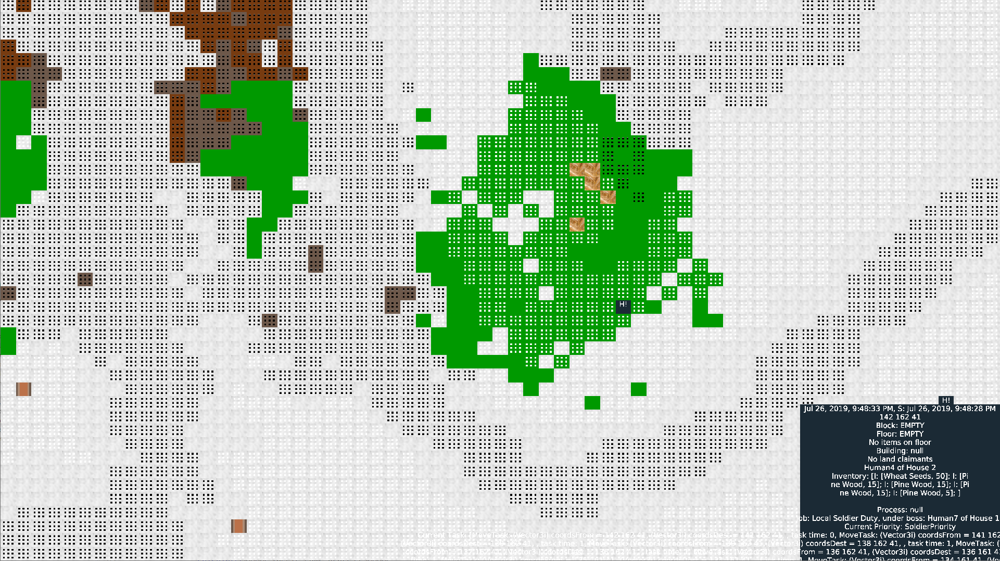

World Civilization
World civilization exhibition at immense scale in individuals and their actions to build the world
This project builds a physical world, and people to populate it. These people have complicated ideas of utility, economic prosperity, and their abilities to form societies and work together towards common goals. These people do not share a collective hive mind, but work on the basis of utility and rationality in doing their jobs, societal tasks, and so on.
Research/Algorithmic Accomplishments
Reverse topological search for resource utility: directly assign utility to some items, back-propogate utility to other items in a relational item graph structure
2D space packing algorithm: greedy structuring of 2D shapes within a larger designated 2D space. Extend beyond polyominos and optimal but slow algorithms.
Rectangle space optimization: maximal/perfect size rectangle search, 2d grid set cover
Pathfinding: hierarchical pathfinding (HPA*), extended to 3D and corners of 3D perimeters (maximal windows); rectangular symmetry reduction, also extended into 3D
Procedural Generation: 2D/3D Perlin and fractal noise, with custom parameters and thresholds, and surface topology operations.
Multivariate approximation: combination of normal distributions to create clusters of resources, organisms, etc.
Code/Game Accomplishments
Process, priority, and task deconstruction: create fine tasks as simple one-time commands from people's larger goals
Physical world: balanced use and availability of resources
Human thoughts and opinions: complicated use and change in values of ethos, opinions and flavors towards various topics
Combat system: use of tactics, bonuses, and calculations of hits compared to armor, damage, dodge, etc. Combat tactics for use in squads and armies vs other groups of people.
DNA, language, and culture spread. Language from Markov chain.
Free actions: events that can fire off, which humans can use to further the agency of their complicated AI: e.g., form households and societies, go to war, create new jobs, etc., all based on utility calculations.
